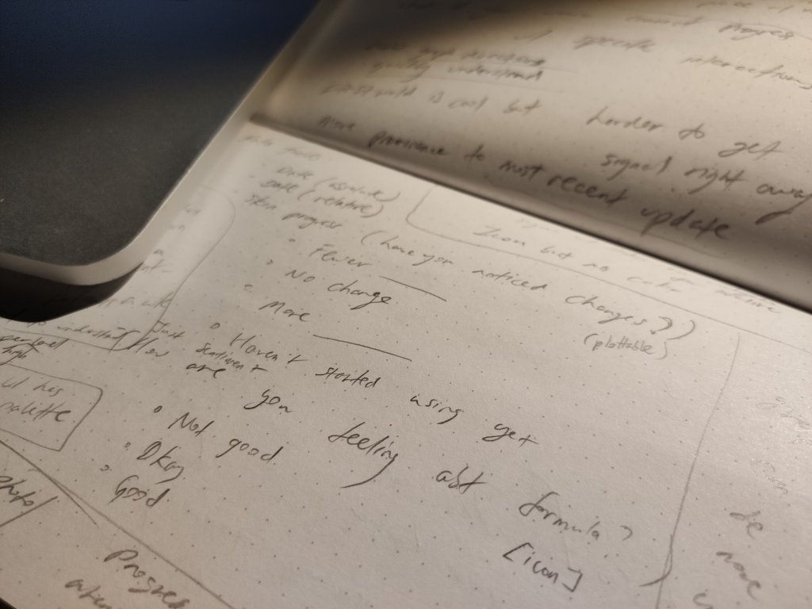
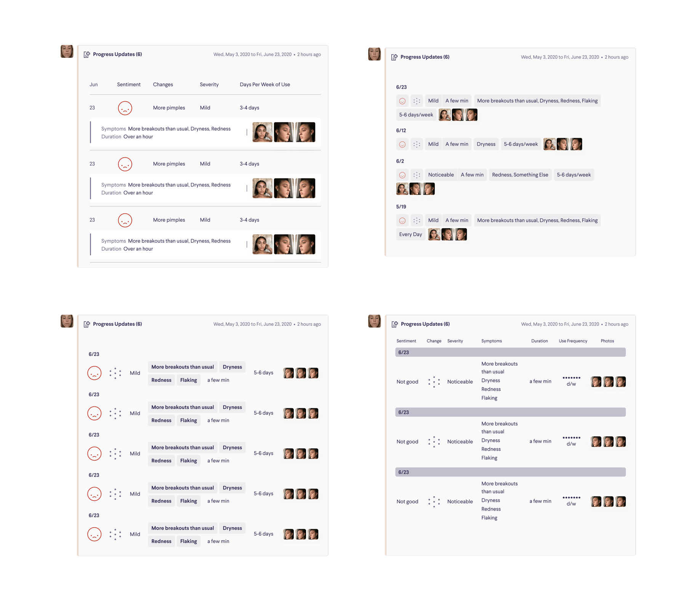
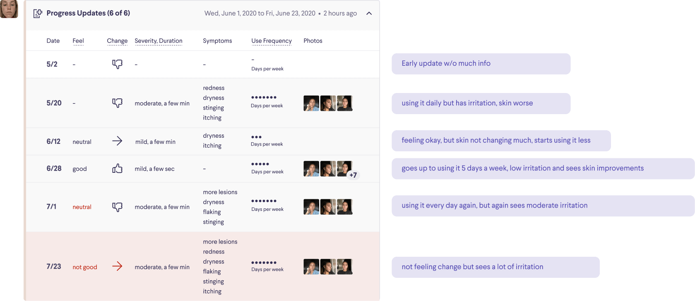

Curology: More data, better care – a UX case study
Progress bundling for Curology
What is Curology?
Curology is the leading company in building the next generation of skincare through customized treatment plans and formulas with powerful prescription ingredients for acne and anti-aging.
Timeline
3 weeks
Problem
How might we show a large amount of patient-generated data quickly and effectively to medical providers?
Background: One of the Product Design team's ambitious projects is launching a new progress tracking feature called Progress, so that patients could track their skin's reaction to their formula. The hypothesized effects are multi-fold, including better efficacy because we are better able to see patients' skin reaction, better retention and higher order value per customer, and more brand connection.
The problem I took the lead on relates to one of the effects of having Progress. Previously, providers made treatment decisions based on the text and pictures sent to the provider when a patient wanted to report an issue with their formula. The new Progress feature allows patients log their skin reaction and upload pictures at any time as opposed to communicating directly with a provider. This means patient files could amass anywhere from a handful to dozens of Progress updates between visits with their provider. Because of this, we realized we needed to redesign our internal tools to show a much larger amount of data than before.
User need: Medical providers have very little time for each patient, so they need to understand what is going on with the patient in as little time as possible, with no confusion. They also don't want their workflow to be drastically changed or interrupted.
Business need: This project has strong alignment between user need and business need. Curology also wants medical providers to provide as accurate of care as possible while not spending too much time on each patient. Any unnecessary time needed to find information or understand a patient is lost productivity.
Collborating with a big team
As the designer on the provider side of the Progress project, I led definition of the problem via conversations and research with the medical team lead, prototyped different ways of solving the problem, iterated through multiple rounds with the medical team lead, and specced the pitch. I collaborated closely with Elijah Williams, my mentor and the lead designer on the patient side of the Progress project. I worked with Tiffany Wong and Kristen Cronnon, our UX copywriters, on how we phrase and structure questions and answer choices within Progress. I also gained a lot of insights through meetings and research sessions with the medical team lead, Jasmin Chang NP-BC. I received additional insight from our UX Researcher, Rucha Makati. The PMs on the project was Shaun Mullen, but was transitioned to Lauren Guenther. Other stakeholders were our Product Design Creative Director Michelle Vandy and CTO Glenn Lortscher.
How might we display that new flood of patient data to medical providers in a way that helps them understand patients more and make a more informed treatment decision?
Understanding the complexity
Because the basic questions of the patient-facing side of Progress had already been approved and vetted, my first step was to understand what questions we are asking patients, which questions have answers that are magnitudinal (meaning it can be measured on a severity scale), and which questions have answers that we have corresponding icons for in our design system (called Radiance).
Divergent exploration of possibilities
With the breadth of the questions in mind, I explored several different ways to present the possible patient answers in an interactive manner, each with benefits and drawbacks. The goal of this exploration is for everyone on the team to be able to grasp the tradeoffs of these vastly different paradigms, both in engineering and how they fit into the medical team's workflow.


Masonry layout
This layout prioritizes at-a-glance viewing of information from a single update with photos upfront, while other individual updates are navigated along a horizontal timeline, keyed green or red based on the reported sentiment. Masonry allows easy insertion of unanticipated progress user answers in the future. Providers can even reconfigure order to their preference.
Table layout
This layout prioritizes quick scanning of data both horizontally in a single update and vertically down a specific field. Some information that is less useful can be hidden in an accordion view, allowing the table to display a lot of information without scrolling.
Graph layout
This layout visualizes the answers that have magnitude on a graph using a graphing library, allowing providers to notice trends across time. The exact user responses are also displayed on the side when the provider hovers over a date on the graph.
Insights from testing and discussion of these prototypes
In addition to getting knowledge from those on the product team who had longer experience at the company, I met with the medical team lead and observed her performing different tasks in the provider timeline.
These were some insights:
- In the existing timeline, providers are very used to lots of scrolling up and down to access various pieces of information, so we need to be conscious of how this new paradigm fits in. Providers also use keyboard shortcut, so again we need to be cognizant of how this paradigm is inserted into the existing workflow.
- Providers really use all of the information we ask in Progress to paint a complete picture of where the patient is in their care. What this means is there is not a very clear cut hierarchy in the importance of pieces of information. There is no information that we ask that the provider does not use.
- In the current timeline, providers look at photos almost always, but they usually read the data first and then look at photos because photos without context are not helpful. This means photos should not be prioritized above the other data.
Juggling lots of moving parts
Even with very rich user feedback from the initial exploration, there was a large amount of uncertainty around the project due to dependencies on other ongoing work. For example:
- The provider timeline, which my feature sits in, is being redesigned. Should my design fit into the old timeline or the new timeline? What is the timeframe to launch for both of these projects so we know which provider timeline will be in place by the time this feature is built?
- Because the patient-facing Progress feature needs to launch at the same time as the provider-facing side, we don't really know how many updates patients will be uploading between provider visits, so what information volume should this design be optimized for?
- The Progress questions we are asking patients can change and be layered upon as the patient progresses through their patient journey, so how do we design an information display when the information coming in can be variable?
Defining constraints
With the large amount of uncertainty around the requirements of this feature, I worked with the product manager to nail down a set of assumptions in order to nail down a v1 that we can launch and learn from.
I defined a set of requirements for what to aim for with a v1:
- Can handle up to 20 updates
- Don't overoptimize, so design something that is implementable within 3 weeks appetite
- All questions could be mapped to a set architecture (after discussion with the medical team and UX copywriters)
Narrowing down: table wins
In light of these constraints and user testing, the table proved to be the best solution for various reasons:
- It fits best into providers' current interaction pattern
- It was the most learnable and usable in user testing
- It was most capable at accomodating 20 updates
- With a set question architecture, it was no longer troubled by issues with a defined schema
- It cut engineering load compared to the other paradigms
So I narrowed down to explore more detailed design decisions within the table paradigm.
How might we balance scannability with compactness?

A1 In a standard table format, it's a challenge to fit all information within the horizontal space allowed in the timeline. Here, each symptom is listed on a new line, which means it can take up a lot more vertical space than other columns. Providers preferred this because it made it easy to more quickly read symptoms and it served as a proxy to quick see when an update has a lot of symptoms.
A2 An idea that saves space is representing days per week of use using dots – however there is a tradeoff in that the dots must represent a discrete number of days per week whereas our answer choices are all ranges of days, 5-6 days per week for example. I also wondered if it would be challenging for providers to know what the dots and d/w mean. However feedback was very positive for it, as providers found that it reduced effort to understand it because it's almost like having small bar graphs within the table.
B Having information in each update displayed fully in-line (reusing Radiance's status component) means updates with less information naturally take up less space. Photos fit neatly into the in-line format. Though it fits more data on the screen, providers exhibited more challenge in reading the information.
How might we compare the benefits of icons with extensibility of text?
C This table has discrete columns for all data except for symptoms, which are listed in-line to save space but displayed using the status component so it is easier to distinguish each symptom. Duration of symptoms is integrated into this in-line list to save space.
D After some testing with providers, I found that icons for skin change (more pimples, etc.) actually made it slower to distinguish than the text, while the sentiment icon caused slight difficulty as well. This table reverts to a text label for skin change.
D1 This separates the month from the date, leaving only the date in the data column. The hypothesis is if the month is left off to the top of the table, it may make it even faster for providers to breeze through data. In testing, however, providers found it more awkward.
How might we make it clear what triggered the interaction?

E There are certain patterns of updates that patients log that are designed to trigger an intervention from the provider. One such pattern is if patients log the same symptom three times in a row. In this example, I use the indicator pill to show that a symptom has appeared three times.
F In this iteration, we highlight the symptom that is being repeated.
F1 Here, I also applied the dot indicator to severity – one dot means symptoms are mild, two dots means symptoms are moderate, and three dots means symptoms are severe.
F2 Because of previous feedback that the skin change icon represented as pimples was difficult to read quickly, skin change is represented using another set of icons: + for skin is improving, - for skin is getting worse, and = for no skin change.
Change icon exploration
With a team of providers who is using this interface hundreds of times a day, day in and day out, it was important to consider all details. One such detail is the icon language we use to convey skin change.
Handover
Having worked through these issues with guerilla testing with the medical team lead and a critique within the product design team, the table design was close to being finalized.
Through the design process I had used edge cases to make sure the design would not need adjustment at the end. However, through discussion with the medical team, a few changes were introduced, for example an accordion button to roll up the progress bundle. These were put through some final testing and iteration.
Before writing the final documentation, I also had a discussion with the engineering manager to check the final feasibility of the design.
The final design was specced and submitted as a pitch in the Shape Up process (Curology's product development process).

Conclusion
With a table layout, I was able to lead the team to a design that was highly effective and could be implemented quickly enough so that the team could learn more about how the Progress feature performs out in the real world. The table view puts a large volume of patient data into a succinct view that allows providers to successfully understand the patient's triumphs, struggles, confidence, and frustration in between visits.
The impact of this work is that the team is able to provide better, more accurate, and more responsive adjustments to the patient's treatment through more data, which helps patients while also helping Curology — the more efficacious Curology's care is, the more likely it is the patient will stay and recommend the subscription to friends. The Progress feature is being rolled out via cohort testing with patient engagement, satisfaction, and churn monitored against the control.

In addition to this project, I also worked on the Radiance design system, web accessibility, A/B tests, and a desktop design at Curology. To read more, see My summer at Curology.